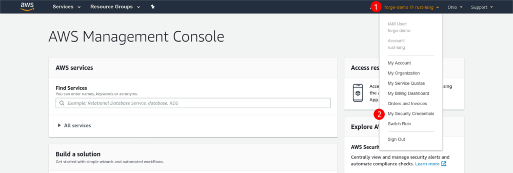

AWS access for team members
Selected members of the Rust Team have access to the AWS account of the project. This includes both members of the Infrastructure Team and members of teams with services hosted on AWS.
This document explains how to access our AWS account, and how to interact with it. If you’re a infrastructure team member and you need to setup or revoke access for another person, read the “AWS access management” page.
Setting up your user after receiving the credentials
The first thing you need to do after receiving your credentials is changing the password and enabling 2-factor authentication: until you do these things, access will be restricted automatically to just the permissions needed to configure 2FA.
Sign into the console with the temporary credentials given to you by the infrastructure team member who created the user. You’ll be prompted to change the temporary password: change it and log in again. Then, go to the “My Security Credentials” page, located in the dropdown at the top:

Scroll down and click the “Assign MFA device” button. Choose “Virtual MFA device” (which is classic TOTP) and configure it with your authenticator app. Once you’re done, log out of the console and log in again to gain access to the resources you’re authorized to use.
Do not choose “U2F security key”, even if you own one: due to limitations of the AWS API, that would prevent you from using the CLI, restricting your access to the console alone.
Using the AWS console
The AWS console provides a visual interface to most of the resources in our AWS account.
Using the AWS CLI
The AWS CLI allows you to interact with our AWS account from a terminal or a script. To set it up the first time, follow Amazon’s documentation to install it and configure your credentials. The CLI doesn’t use your console password to authenticate: you’ll need to create an access key from the “My Security Credentials” page on the console.
2-factor authentication
To ensure the security of our AWS account, 2-factor authentication is required to interact with the CLI. The Infrastructure Team developed a script that eases the authentication process by creating a temporary session validated with 2FA for the current shell. The session expires in 12 hours, and it’s valid for an unlimited number of invocations.
To use the script, clone the rust-lang/simpleinfra repository in a directory. Then, every time you need to use the AWS CLI run this command in your shell:
eval $(~/PATH/TO/SIMPLEINFRA/aws-creds.py)
That command will prompt you for your 2FA code, and it will set a few environment variables in the current shell with the temporary credentials. You’ll need to run the command again after 12 hours, or if you want the credentials on another shell.
Plaintext credentials
By default, AWS CLI stores your credentials (including the secret key) in the
~/.aws/credentials file, without any kind of encryption. While the danger of
having plaintext credentials stored in your home directory is partially
mitigated by the 2FA requirement, it’d be best not to store them anyway.
If you use a password manager with a CLI interface, an approach you can take to avoid the problem is to store your credentials in the password manager, and configure the CLI to call your password manager to fetch the credentials when needed.